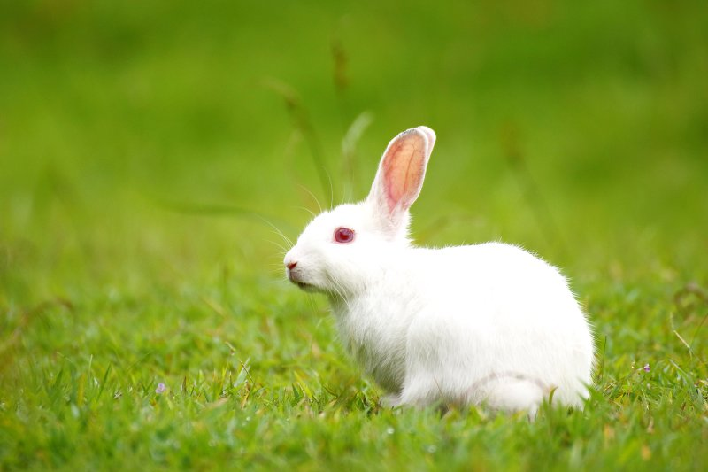
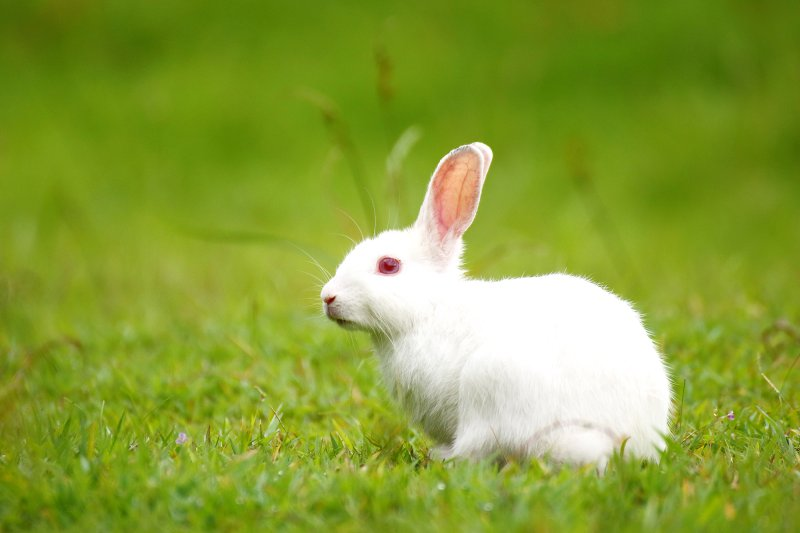
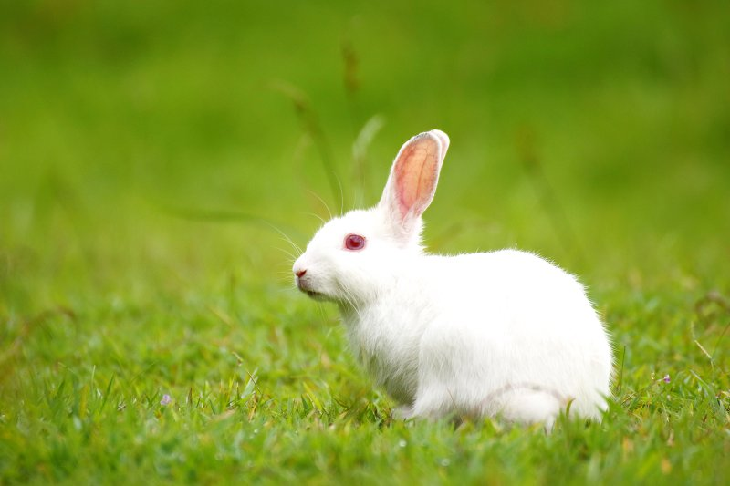

After observing the outcome of the above code. Whenever I start decreasing the size of the page I came to know that the Aninamls row is breaking first because we have used col-md for the palnts row. col-md means column medium. If we use col-md the columns will become horizontal when the width is >= 766px. If we use col-sm(column small)the columns will become horizontal when the width is >= 576px we have used col-sm for the Letters row. So when we start decreasing the size of the page when the page size reaches 766px the Animals row will convert into vertical then after continuing the decresing process again when the size reaches 576px the Letters row will convert into vertical. So this is the reason why the Animals row will first converst into vertical.
